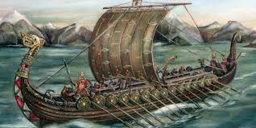

The Viking Age
Period: 793 – 1066 CE
Viking raids from Scandinavia began around 793 CE with the attack on Lindisfarne monastery, but the Vikings were far more than raiders. They were skilled traders, explorers, and settlers who reached as far as North America roughly 500 years before Columbus, establishing a short-lived settlement in what's now Newfoundland, Canada. Norse society had surprisingly progressive elements for its time, including property rights for women and elected assemblies called things that functioned as early forms of representative governance.
Type: Medieval Norse Era